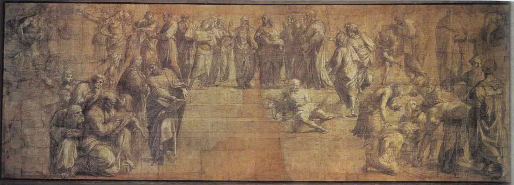

Raphael
Born: April 6, 1483, Urbino, Duchy of Urbino Died: April 6, 1520, Rome, Papal States
Italian painter and architect of the High Renaissance. Together with Michelangelo and Leonardo da Vinci, he forms the traditional trinity of great masters of that period. While Michelangelo was working on the first campaign of the Sistine Ceiling, Raphael arrived in Rome and rose to a level of power and wealth so high no other Italian artist had ever met, becoming the papal architect.
Studied under Pietro Perugino, whose influence is visible in his early works such as The Marriage of the Virgin.
Artworks
The Marriage of the Virgin
Shows large influence from his teacher Perugino—compare to Perugino's Delivery of the Keys, which has similar figures, ground, and architecture. The painting depicts the marriage of the Virgin Mary to Joseph.

Portrait of Maddalena Doni
A portrait of Maddalena Strozzi, wife of Agnolo Doni. The composition resembles that of the Mona Lisa, but with more details on the material of cloth and jewels. Painted as a pair with the Portrait of Agnolo Doni.

Portrait of Agnolo Doni
A portrait of the wealthy Florentine merchant Agnolo Doni (who also commissioned Michelangelo's Doni Tondo). The composition resembles that of the Mona Lisa, but with more details on the material of cloth and jewels. Painted as a pair with the Portrait of Maddalena Doni.

Philosophy (The School of Athens)
The building depicted is not a real one but an invention. The statues in the left and right are Apollo and Minerva, gods of the arts and wisdom. In the center stand Plato and Aristotle: - **Aristotle** holds his Nicomachean Ethics, which stresses the rational nature of humanity and the need for moral behavior. His hand is placed horizontally to indicate the earth is the source for his observation. - **Plato** holds his Timaeus, in which he describes the origin of the universe. He points upward to indicate that his ideas come from the realm of the mind. Key figures identified: - **Socrates** is in a green robe at the left of Plato - **Pythagoras** at the lower left demonstrates his system of proportions - **Ptolemy** at the extreme right contemplates a celestial globe - **Euclid** at the left of Ptolemy bends down to draw a circle—this is a portrait of Bramante - At the extreme right, **Raphael** painted a self-portrait looking out - In the foreground sits a lonely man with 16th century stone cutter boots—a portrait of **Michelangelo**

Poetry (The Parnassus)
Apollo in the center leads a band of writers that includes Dante, Homer, and Sappho. The fresco celebrates poetry and represents Mount Parnassus, the mythological home of the Muses.

Disputa
Also known as the "Disputation of the Holy Sacrament," this fresco depicts the Church's triumph over heresy. The composition is organized in two zones: the heavenly realm above with Christ, Mary, John the Baptist, and the saints, and the earthly realm below with theologians debating the Eucharist.

Cartoon for Philosophy
The preparatory drawing (cartoon) for The School of Athens fresco in the Vatican. Shows Raphael's design process and the development of the composition before painting.
The Expulsion of Heliodorus from the Temple
Depicts the biblical story from 2 Maccabees in which Heliodorus, sent to seize the treasure of the Temple of Jerusalem, is driven out by divine intervention. The fresco was commissioned to assert papal authority over the Church's temporal possessions.

The Cardinal Virtues
Three of the cardinal virtues—Fortitude, Prudence, and Temperance—are personified as statuesque women seated in a bucolic landscape. The theological virtues—Charity, Hope, and Faith—are depicted by putti. Shows Michelangelo's stylistic influence but with less tension.

The Mass at Bolsena
A Bohemian priest who doubted the doctrine of transubstantiation was celebrating mass at Bolsena, when the bread began to bleed in the shape of a cross. Below kneel the officers of the Swiss troops. Pope Julius II appears kneeling in prayer, witnessing the miracle.

The Meeting of Leo the Great and Attila
Depicts the meeting between Pope Leo I and Attila the Hun, which took place in 452 in northern Italy. Saints Peter and Paul are the ones flying in the sky, shown as divine protectors of the Church who frightened Attila into retreat.

Liberation of Saint Peter
Peter is depicted as a portrait of Julius II. The fresco shows three scenes: the angel appearing to Peter in prison (center), the angel leading Peter past the sleeping guards (right), and the guards awakening to discover Peter's escape (left). Remarkable for its dramatic use of multiple light sources.

La velata
"The Veiled Woman" - The rich color in the painting suggests Raphael's interest in the colorism of Venice. The identity of the sitter is unknown, though she may be the same woman who appears in the Sistine Madonna and is traditionally identified as Raphael's mistress, known as "La Fornarina."

Transfiguration
Raphael's last painting, left unfinished at his death in 1520 and completed by his workshop. The upper half shows the Transfiguration of Christ on Mount Tabor, while the lower half depicts the Apostles' failed attempt to heal a possessed boy. The painting was displayed at Raphael's funeral and is considered one of his greatest works.

Portrait of Leo X
Leo X did not like Michelangelo, so Raphael rose to a level of power and wealth so high no other Italian artist had ever met. Raphael became the papal architect. The portrait shows the pope with cardinals Giulio de' Medici (the future Pope Clement VII) and Luigi de' Rossi.